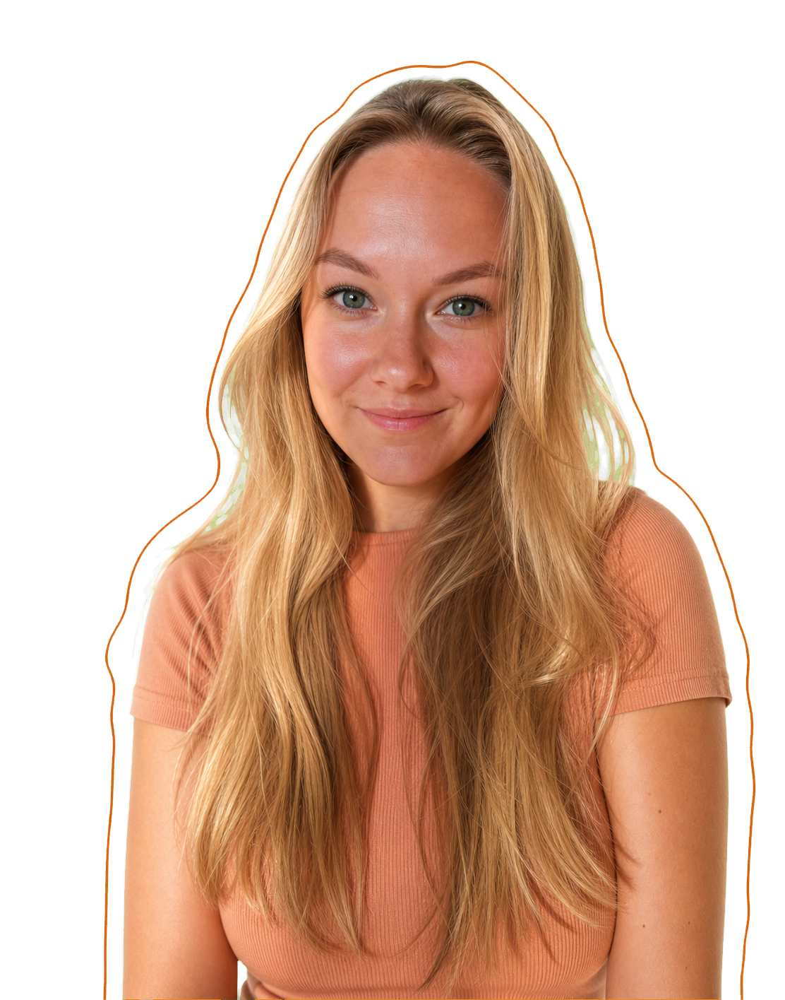
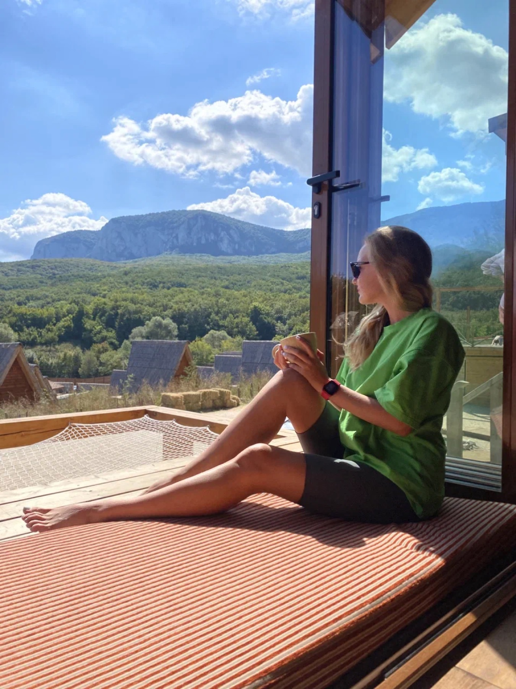
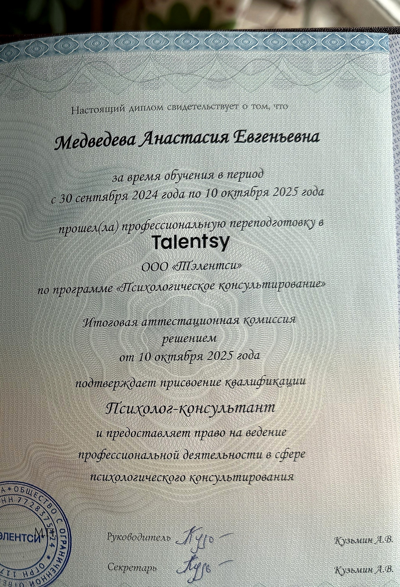

Знакомимся с вашей тревогой
Разберём реальные эпизоды: что запускает тревогу, какие мысли и ощущения появляются, что вы обычно делаете.
Между встречами Короткие записи о тревожных ситуациях.
Индивидуальная программа · 6 недель
Мысли не останавливаются, тело напряжено, разговоры прокручиваются снова, а решения откладываются.
За шесть недель разберём, как устроена именно ваша тревога, и будем подбирать способы справляться с ней в повседневной жизни.
Бесплатное знакомство · 20 минут онлайн. Обсудим запрос и формат работы.

01
Тревога редко выглядит одинаково. Иногда она прячется в самых привычных мыслях и действиях.
Мысли не останавливаются, даже когда хочется отдохнуть.
Вы заранее прокручиваете то, чего ещё не произошло.
После разговора снова думаете, что стоило сказать иначе.
Долго готовитесь к важному шагу, но никак не начинаете.
Ищете решение, за которым наконец придёт спокойствие.
Спрашиваете совета, но облегчение быстро проходит.
Сравниваете себя с другими и сомневаетесь в себе.
Устаёте от собственной головы.
Иногда тревога выглядит не как явное «мне страшно». Она может прятаться за контролем, ответственностью, перфекционизмом и бесконечным «мне надо ещё немного подумать».
02
Человек может много делать, чтобы тревога отступила, и на время это действительно помогает. Но в похожей ситуации привычный круг может начаться снова.
Мозг запоминает способ облегчения — и круг может повториться.
На встречах мы разберём именно ваш тревожный цикл: что его запускает, как вы реагируете и что помогает ему повторяться.
03
Каждую неделю берём то, что происходит с вами в реальной жизни: разбираем на встрече, пробуем новое между сессиями и смотрим, что меняется.
Разберём реальные эпизоды: что запускает тревогу, какие мысли и ощущения появляются, что вы обычно делаете.
Между встречами Короткие записи о тревожных ситуациях.
Посмотрим, где в вашем цикле возникают проверки, поиск советов, откладывание и попытки всё контролировать.
Между встречами Замечаем один повторяющийся сценарий в жизни.
Исследуем ранние признаки тревоги и базовое состояние: сон, нагрузку, движение и восстановление.
Практика Коротко сканируем тело и замечаем первые признаки напряжения.
Выясним, какие привычные действия быстро облегчают тревогу, но поддерживают её цикл.
Между встречами Например, замечаем импульс перепроверить и пробуем сделать паузу перед привычным действием.
Возьмём одну реальную ситуацию, где тревога тормозит решение, и попробуем сделать посильный шаг.
Практика Выбираем небольшой шаг в деле, которое откладывали из-за сомнений.
Посмотрим, что помогло именно вам за предыдущие недели и на что можно опираться дальше.
Итог Ваша персональная карта тревоги и план на сложный период.
Это ориентир, а не жёсткий план: содержание и темп встреч будут опираться на ваш запрос.
04
05
Тревога не враг, которого нужно победить.
Она часть нашей системы защиты. На встречах и между ними будем искать способы, которые помогают именно вам.
За шесть недель мы будем работать над тем, чтобы вы:
Соберём её из ваших наблюдений и того, что вы проверили на практике за шесть недель.

06
Веду частную практику. В работе использую гештальт, техники КПТ и схема-терапии.
Тема тревоги многослойна. Мне интересно вместе с человеком исследовать, как она ощущается в теле, какие мысли и действия с ней связаны, в каких ситуациях возникает и что помогает с ней справляться.
Мне важно не подгонять человека под готовую схему, а постепенно понять, как устроена именно его тревога.

Диплом по психологическому консультированиюКвалификация: психолог-консультантОткрыть диплом Международный диплом Psychological Guidance & CounsellingOEAEP, PragueОткрыть дипломТакже — консультант в сфере сексуальных отношений. Продолжаю обучение гештальт-терапии и регулярно прохожу супервизию.
07
Если у вас другой запрос или вы пока не уверены, что нужен шестинедельный формат, можно начать с индивидуальной консультации. На бесплатном знакомстве мы также обсудим, подходит ли вам программа.
Программа не заменяет медицинскую или психиатрическую помощь и не предназначена для экстренных состояний.
08
6 индивидуальных встреч по 60 минут онлайн. Дату начала согласуем на знакомстве.
В пересчёте на программу — 3 750 ₽ за встречу.
Возможна оплата частями
2 платежа по 11 250 ₽
Сначала познакомимся: оплачивать программу сразу не нужно.
Частые вопросы
Мы подберём удобное время. Перед каждой 60-минутной встречей я пришлю ссылку для видеосвязи. Подключиться можно из браузера — ничего устанавливать не нужно.
Обсудим, что именно не подошло, и скорректируем работу. Заставлять себя выполнять упражнение не нужно.
Да. На знакомстве обсудим, подходит ли вам программа про тревогу или лучше начать с обычной индивидуальной консультации.
Следующий шаг
Созвонимся на 20 минут бесплатно: коротко обсудим ваш запрос, я расскажу о программе, и вместе поймём, подходит ли вам такой формат и подходим ли мы друг другу. Не нужно заранее формулировать идеальный запрос.
20 минут · онлайн · без обязательства продолжатьЕсли вам хочется сначала прийти с конкретным запросом или вы пока не уверены, что нужен шестинедельный формат, можно записаться на обычную индивидуальную консультацию.
Записаться на консультацию